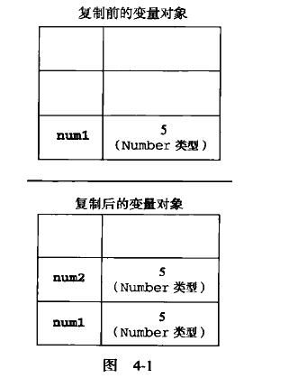
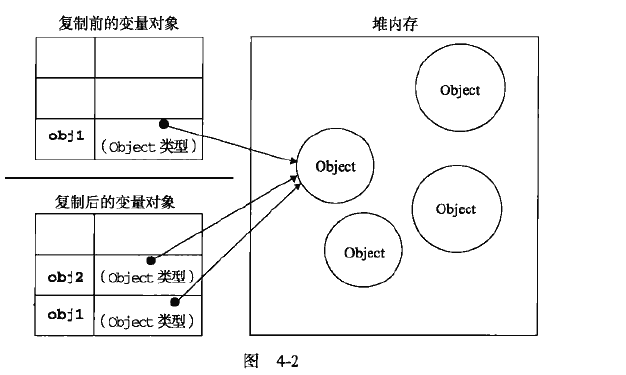

值的赋值是操作变量中实际的值:Undefined,Null,Boolean,Number,String这五种
let num1 = 5
let num2 = num1
num1 = 6
console.log(num1)
console.log(num2)
//最终num1:6,num2:5

引用数据类型:Object;引用的赋值，实际上是将该引用的指针赋予给变量，就像我们用的快递箱子。A去存了个东西在箱子里面，相应的给了把钥匙给A。 这个时候B复制了一个一模一样的钥匙，A把箱子里面东西改变后，B打开箱子拿到的也是改变后的东西。
let obj1 = {a:5}
let obj2 = obj1
obj1.a = 6
console.log(obj1.a)
console.log(obj2.a)
//最终结果都是6,

对于引用类型值的传递，有个经典的问题在浅拷贝与深拷贝。
//浅拷贝
let obj1 = {
info:{
a:2
},
n:1
}
let obj2 = Object.assign({},obj1)
obj1.info.a = 3
obj1.n = 0
//这个时候我们发现obj2.n == 1;obj2.info.a ==3。
//这是因为，浅复制只会复制第一层，而更加深层次的引用，还是同一个钥匙。
//深拷贝,其实就是递归讲每一层的值赋值给新的对象
let obj1 = {
info:{
a:2
},
n:1
}
function deepClone(obj){
let newObj = Array.isArray(obj)?[]:{}
//数组也是对象的一种
Object.keys(obj).forEach(key=>{
if( typeof obj[key] === 'object'){
newObj[key] = deepClone(obj[key])
}else{
newObj[key] = obj[key]
}
})
return newObj
}
let obj2 = deepClone(obj1)
obj1.info.a = 3
obj1.n = 0
//这个时候我们发现obj2已经不根据obj1的变化而变化了。
let obj3 = JSON.parse(JSON.stringify(obj1))